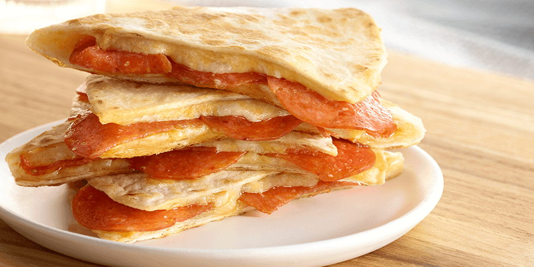

Breakfast Wrap

Description
We all have busy lives which is why i value simplicity when cooking. This is an easy recipe for
a delicious breakfast wrap. It's made with easy whole ingredients which will make your grocery
trip a breeze. It also can be cooked in less than 15 minutes if you can manage your time right!
Ingredients
- Tortilla Wrap
- Eggs
- Turkey Pepperoni
- Cottage Cheese
- Provolone Cheese
- salt
- Oil
- Optional: Red Pepper Flakes
Steps
- Heat up pan in medium heat and add a splash of oil.
- While pan is heating up, place down a tortilla wrap and place 2 slices on cheese on the wrap.
- Spread cottage cheese on top of the slices cheesed and tortilla wrap.
- Place turkey pepperoni on pan and fry until lightly crispy. Then place pepperoni on wrap.
- If needed, add additional oil to the pan.
- Add 2 eggs on pan and scramble to your desired level. Then place the scrambled eggs on the wrap.
- Close the wrap to ensure al the contents stay inside.
- Add additional oil to the pan and place wrap into the pan.
- Wait until each side is golden brown and place back on your plate to enjoy!